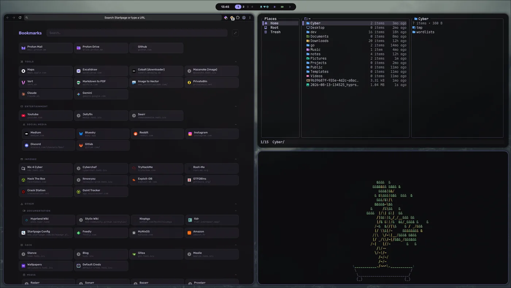
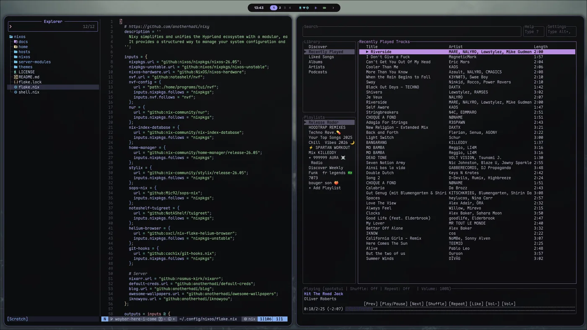

nixeljam
One Nix flake for my desktop, a self-hosting mini PC, a VPS and a work Mac. Hyprland, base16 theming and a stack of server modules.

My NixOS configuration, built on top of anotherhadi's Nixy. One repo declares every machine I own: pc, minipc, vps, work-mac and a WSL host, each with its own flake and sops-encrypted secrets.
The desktop side is Hyprland with waybar, tofi, hyprlock and swaync, all themed from one base16 scheme through Stylix. Neovim is configured through nvf, the terminal is Ghostty, and zellij, starship and zsh do the rest.
The mini PC runs the self-hosted stuff as NixOS modules: Caddy in front, copyparty for the file server, Gitea, AdGuard Home, Glance, fail2ban, the *arr stack, a game relay and the habits board below. Tailscale handles admin access.

